2. Jeju Island Explorer – Natur und Wasserfälle |
Dauer - 3 Tage |
Preis - ab 320 € p. P. |
Erkunde die traumhafte Vulkaninsel Jeju.
mit Hallasan-Nationalpark, Lavahöhlen, Wasserfällen und Küstenwanderung auf dem Olle-Trail.
Perfekt für Naturliebhaber. |
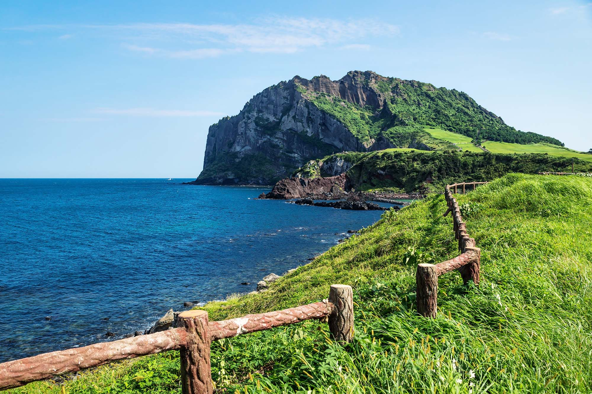
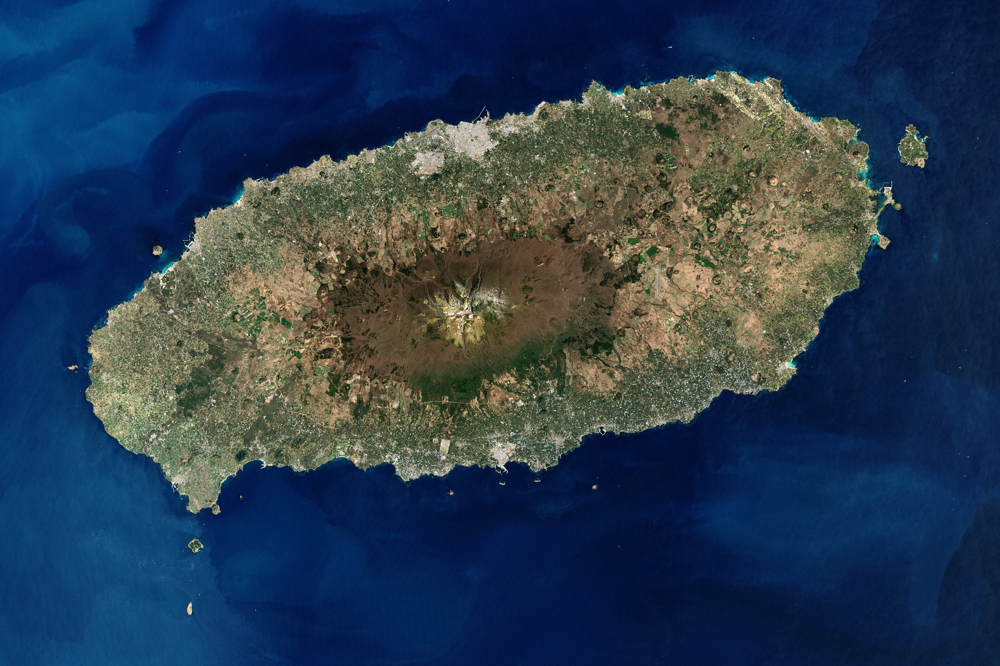
| mehr erfahren |
| 3. DMZ Tour – Grenze zwischen Nord und Süd |
Dauer - Halbtagesausflug |
Preis - ab 320 € p. P. |
Erlebe die Demilitarisierte Zone (DMZ)
mit Besuch des 3. Infiltrationstunnels, Dora-Observatorium und Panmunjeom (wenn verfügbar). |
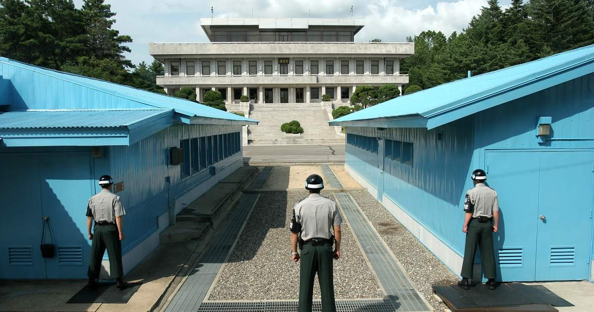
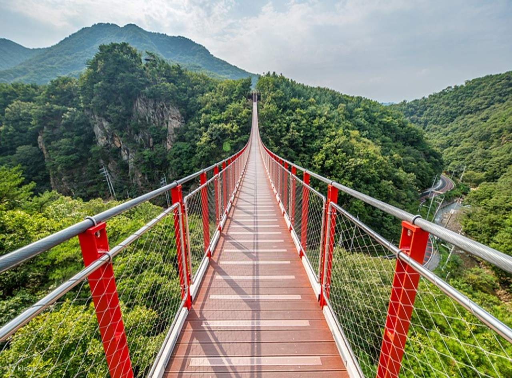
| mehr erfahren |
| 4. Busan Beach und Tempel Tour |
Dauer - 2 Tage |
Preis - ab 210 € p. P. |
Südkoreas zweitgrößte Stadt überzeugt mit Ozeanpanorama, Haeundae-Strand, Jagalchi-Fischmarkt.
Der
Haedong Yonggungsa-Tempel direkt an den Klippen. |
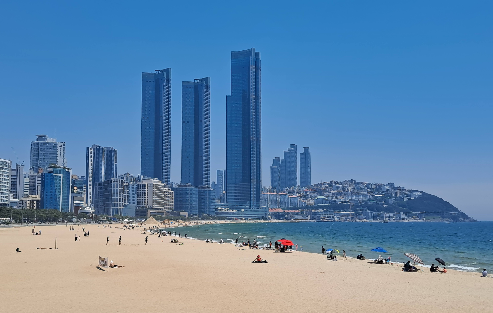
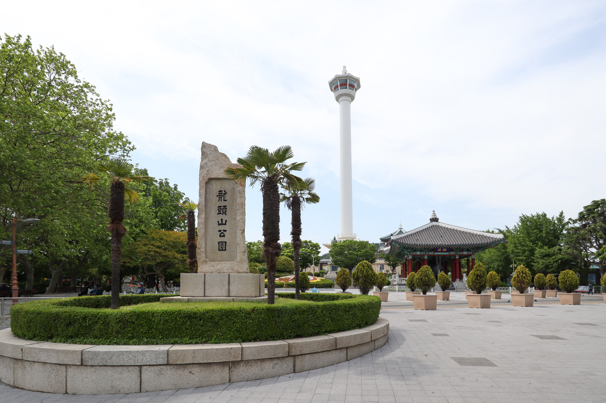
| mehr erfahren |
| 5. Korean Cuisine Deep Dive |
Dauer - 1 Tag (5–6 Stunden) |
Preis - ab 95 € p. P.. |
Geführte Food-Tour durch Seoul
mit Marktbesuchen, Kimchi-Workshop, Streetfood-Verkostung und traditionellem Teetrinken im Insadong-Viertel. |
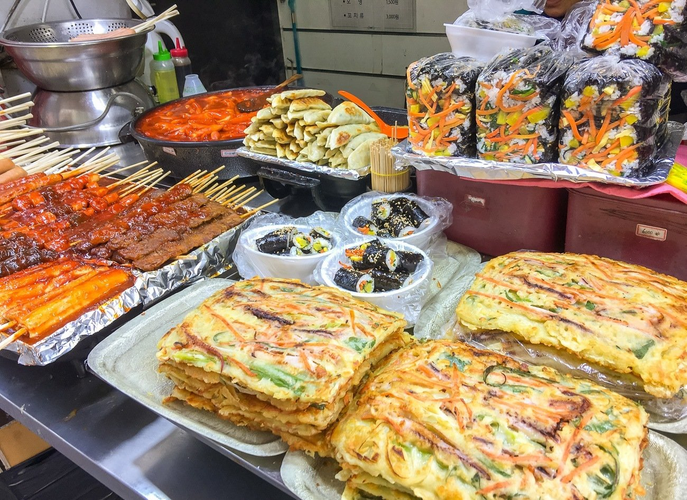
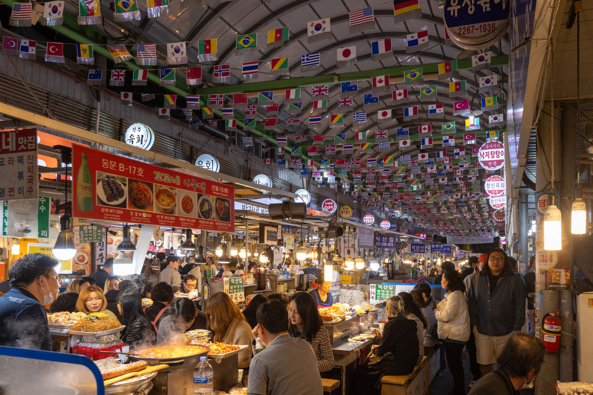
| mehr erfahren |
| 6. K-Pop und K-Beauty Insider Tour |
Dauer - 1 Tag |
Preis - ab 115 € p. P. |
Besuche K-Pop-Studios, Flagship-Stores, probiere Beautyprodukte und erlebe das Hallyu-Feeling live.
Inklusive Fotoshooting und Goodie-Bag. |
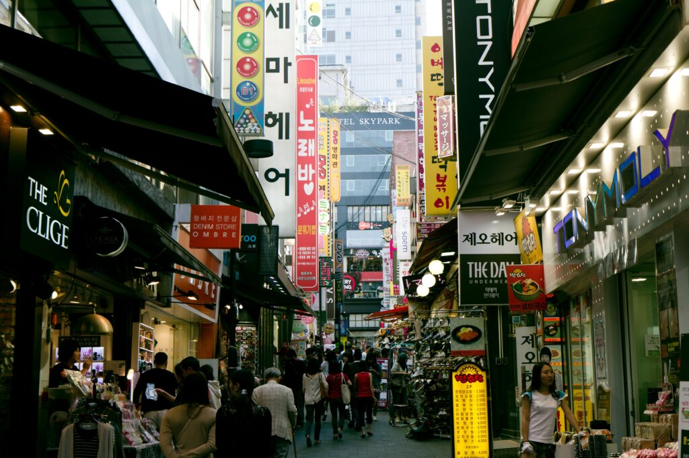
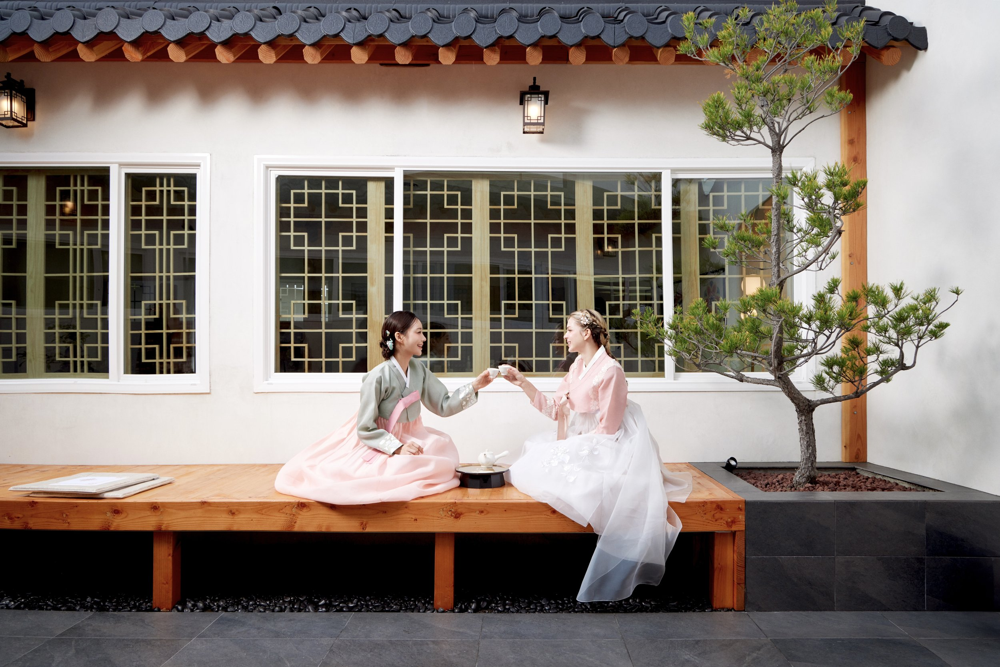
| mehr erfahren |
| 7. Südkoreanische Geschichte – Von der Joseon-Dynastie bis heute |
Dauer - 2 Tage |
Preis - ab 180 € p. P. |
Ein tiefer Einblick in Koreas Geschichte
mit Museumsbesuchen, Palästen, Geschichtswanderung und Gesprächen mit lokalen Historikern. |
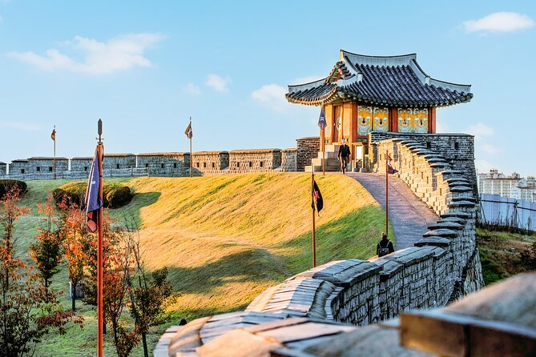
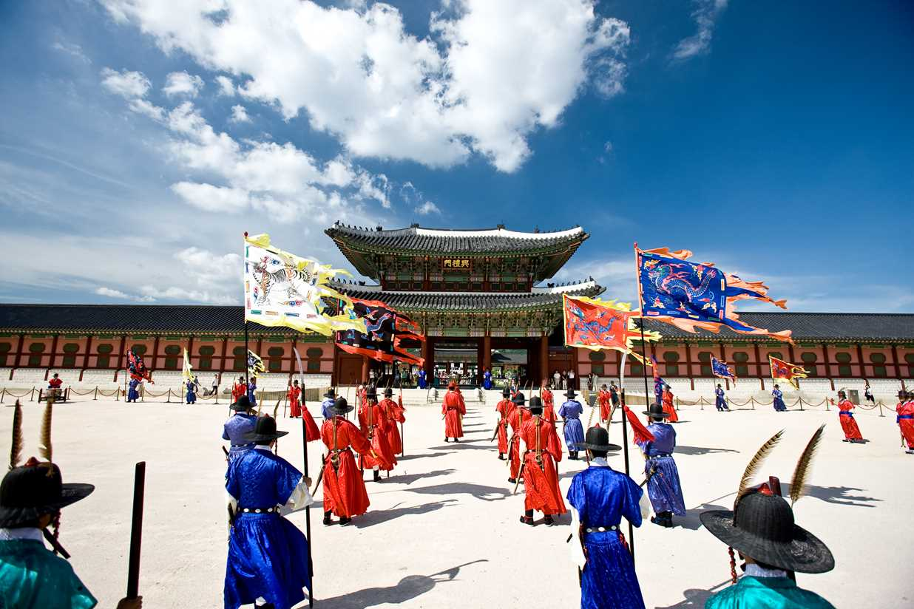
| mehr erfahren |
| 8. Templestay – Übernachtung im buddhistischen Tempel |
Dauer - 2 Tage / 1 Nacht |
Preis - ab 160 € p. P. |
Erlebe Meditation, Teezeremonie und vegetarische Tempelküche.
Übernachtung in einem echten Tempel wie dem Jogyesa oder Haeinsa. Authentisch und entschleunigend. |
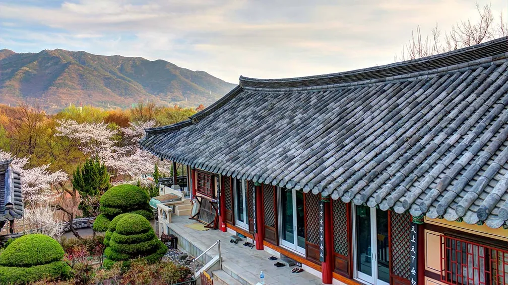
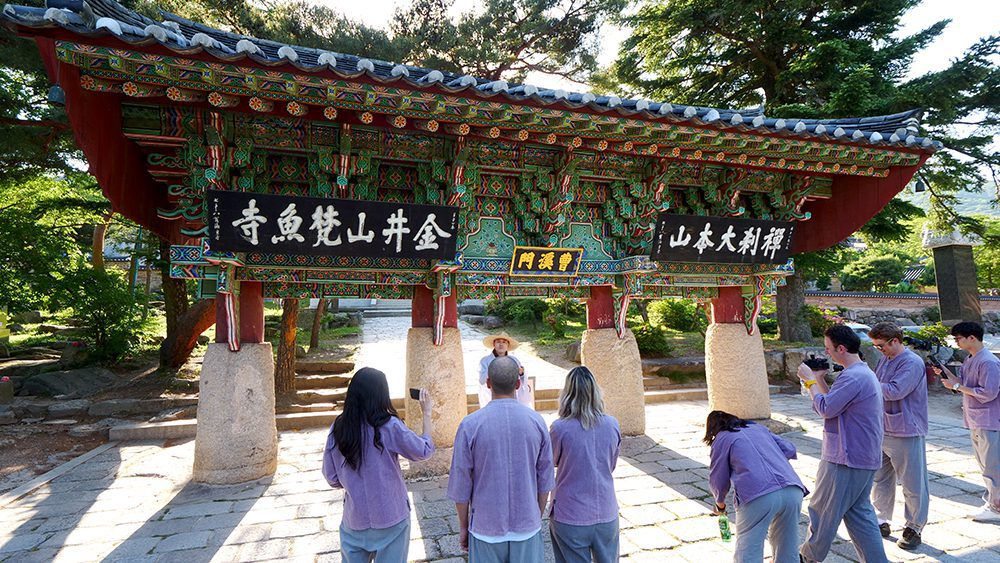
| mehr erfahren |
|